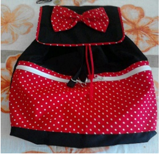
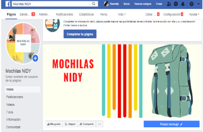

En noviembre del mismo año, se presentó una propuesta de un cliente, en la cual era un diseño diferente. De Minnie y Mikey. Y gracias a este diseño fue el mejor para regalar a tu pareja, especial para un aniversario de novios o para San Valentin

El 27 de febrero de 2016, se creó la página de Facebook, en la cual se publicaban las fotos por medio de ahí se hacían los pedidos y desde entonces se han diseñado variedad de productos
